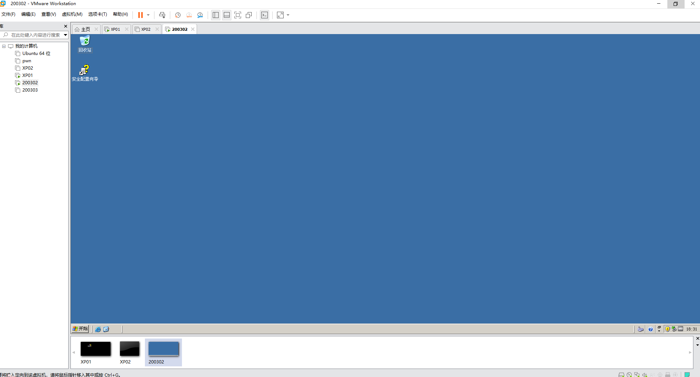

# window2003安装过程中的一些问题总结
关于上课讲到的2003的安装，想必基本完成了，剩下的一些问题就是如何打开跟操作，接下来我会把一些在打开虚拟机的过程中可能遇到的问题跟大家分享一下
首先当我打开200302的时候，发现遇到了这种问题
解决方法：
1.先把叉叉点了，然后把虚拟机关机
2.将虚拟机先关机之后，点击编辑虚拟机设置，随后检查硬盘文件位置和CD/DVD文件，查看是否都设置好了，如果没有，则补全


3.完成之后点击确定，然后就可以打开虚拟机了，接着就是进入我们这个登入界面，我这里是没有修改用户名的，如果之前设置过用户名的可以自行修改（有人发现密码不能输入数字？真有人吗？注：如果你发现无法输入数字，请看数字键最上面那一行NumLock键是否亮起，如若没亮，按亮之后就可以正常输入数字了）
4.这个界面我们不用管它，直接在下面注释那里输入No接着确定就行了
5.这个界面也是，我已经试过了，更新的网址已经打不开了，所以也不用管，直接叉叉就行


6.完结撒花，windows 2003的虚拟机安装算是圆满完成